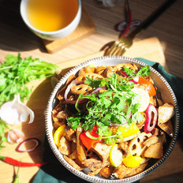

今日早餐推荐：精致的早餐，有时会成为起床的动力呢
今日午餐推荐：高颜值烤箱菜，不动烟火也能做午餐
今日下午茶推荐：没有下午茶的周末不是完整的周末
今日晚餐推荐：海鲜正肥美，你舍得就这样错过吗
今日夜宵推荐：夜太凉，睡前就是要吃点暖暖的才舒服
9月，初秋宜清补更多菜谱 >
9月，润肺养气血更多食材 >


最新菜谱 更多菜谱 >最新 | 最热: 今日 七天
每小时最热菜谱 更多菜谱 >最新 | 最热:一小时 今日 七天
今日最受欢迎菜谱 更多菜谱 >最新 | 最热:一小时 今日 七天
一周热门菜谱推荐 更多菜谱 >最新 | 最热:一小时 今日 七天


-

- 

健康新闻更多健康咨询 >


中国，最大的菜谱库800,000 篇
每月，用户访问数量20,000,000 次
每年，菜谱被浏览量36,000,000,000 次
现在，这些数字还在不断的增长着，欢迎您来一起使用美食杰